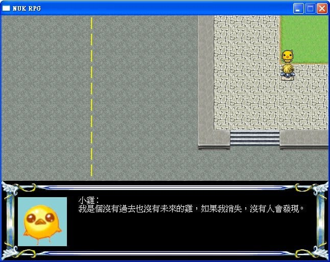

NUK_Game_v1(盜墓私心版) |
|
上一篇說到我在NUK GAME裡面偷偷安麗這件事情，其實就是劇情裡面安插了一點那什麼的對白啦！ 嘛～真的是不知道自己那時候到底有多廚... 就當時在改劇本的時候，一個手歉疚不小心...ry 不廢話了，直接來截圖！

這小雞莫名其妙的就變成走失寵物，然後腦中就冒出了那個穿著小雞內褲、老是消失不見的小哥，所以... 在我們找到他的時候，他口中喃喃自語的不知道在趕什麼... 無論如何，我們還是帶他去找主人了，他的主人站在生態湖畔望著遠方不知道在想什麼。(雖然我沒有把湖畫出來，逃～ 小雞和主人生科見著面之後，睜著他水汪汪的大眼，說著...帶我回家。 其實那個時候，我是想打吳邪的...每次修劇本的時候都手欠，想要改字。 總之，安全的護送(！？)小雞回到主人身邊... 所以說，鑑於小雞是張家小哥的話，生科的對白應該就要出現這個了。 「如果你消失了，至少我會發現。」 其實就很順的把小雞的主人當成小邪了，不過比起吳邪，生科可不天真啊！他可是很厲害的，只是宅了點。 順帶一提，其實生科的肩膀上還站了一隻猴子，我嚴重懷疑他會變成走失寵物是因為吃了那猴子的醋。 因為有了小哥和天真，所以也放了小花的對白。 「全部打死，算我的。」 當初在寫劇本的時候好像漏了兩個字，不過基本上在沒劇情的時候，不管怎麼刷，政法就只會說那兩三句話，是個少數的有多一點台詞的NPC。 會選政法來說這句台詞，是因為西裝的關係(非常懷疑他裡面是穿著粉紅襯衫 我得先很慎重的聲明，我不是黑花派的！！！ ↑三個驚嘆號以示慎重。 這段亂數對白(四個)一直被我們吐槽，他到底有幾副墨鏡，而且一直戴著怎麼會丟！？ 打程式帶著，晚上也帶著，還因為墨鏡太黑而點燈照亮，是為什麼那麼執著於墨鏡，東西不見還跑到廁所來(害我當初把劇本打成「窩在程式打廁所」，笑了好幾天 雖然我真的不是資工X政法(黑花)派的，但是我還是弄了個類似的劇情，資工(黑瞎)本來應該待在工學院，但是為了政法(小花)，硬是要賴在資工。 我才不會說，監護人什麼的不是老師而是有個一顆盜筆粉的編劇。 火燒張家樓...應化(二叔)...你..火燒小哥家就算了...別連西冷印社...連你家大姪子的小店都... 編劇表示他已經不忍吐槽了。 其實當時編劇表示他是想打「幸好...我沒害死你」來著，但是...因應劇情，樓下的那傢伙被幹掉了... 當初在測試的時候有偷偷改成上面那句，結果忘了截圖啦！ 上面一連串的盜筆梗，只能說那個時候我的心思全部都放在盜筆上面了，三不五時會來一句對白，那真是一段瘋了的時光... 編劇曾經說過，他是挺想在現實生活中來這句的，「你有權保持沉默，但你說的話將成為呈堂共證。」 但是編劇的生活太安逸了，只好來遊戲裡惡搞一下。(X) 說到陰謀，那就得有真相，所以只好來個「真相永遠只有一個！」 好吧！事實的真相其實是...當時高大十九系擬人RPG製作小組無聊到發瘋，所以弄出來的這個東西。(逃～ 如果你和他認真了，那麼就只好...(對，編劇其實忘不了仙劍一，所以每次Game Over都來這招 其實說惡搞也不算啦！就是修修劇本、改改對白而已，改完之後都不知道自己改了什麼去了，各種金魚腦～ 不過當初因為太羞恥play了，有些對話算是隱藏版的，如果不先觸發，想要再看就沒了~ 呵呵，你以為這麼羞恥的東西，我會放到最後讓你們有看到的機會麼！ 不過截圖的時候，很多張都是在測試的時候順便截的，對白的部分還好，上一回的戰鬥畫面被學長抓到BUG，那場戰鬥應該只有三個人參戰而已，當初截的時候剛好在測試，一個沒注意到就截了四個人參戰的圖(躺，反正當初仙劍一的解說本截圖也怪怪的，沒關係←自我安慰中 總之，高大十九系擬人RPG(v1版)就介紹到這裡。 以一個大眾面向的遊戲來說，其實是不合格的，但是單以程式來說的話，只能說還是有點小BUG，雖然我玩起來還算順利，但是好像許多人不習慣... 明明操作我是比擬仙劍一的模式在做，但是好像很多人不知道怎麼玩，我一直以為一般遊戲預設ESC鍵就是呼叫選單出來說！？還是我誤會了什麼？ 那時候的我曾經想過，不知道有沒有時間修改，不過事實上是沒有...本來我還想做到更細緻一點的說，像是角色選單狀態之類的，現在想起來就是想太多... 以上!!!!!至少遊戲能順利跑完我就先放鞭炮了!! |
| by 陌阿柳 |